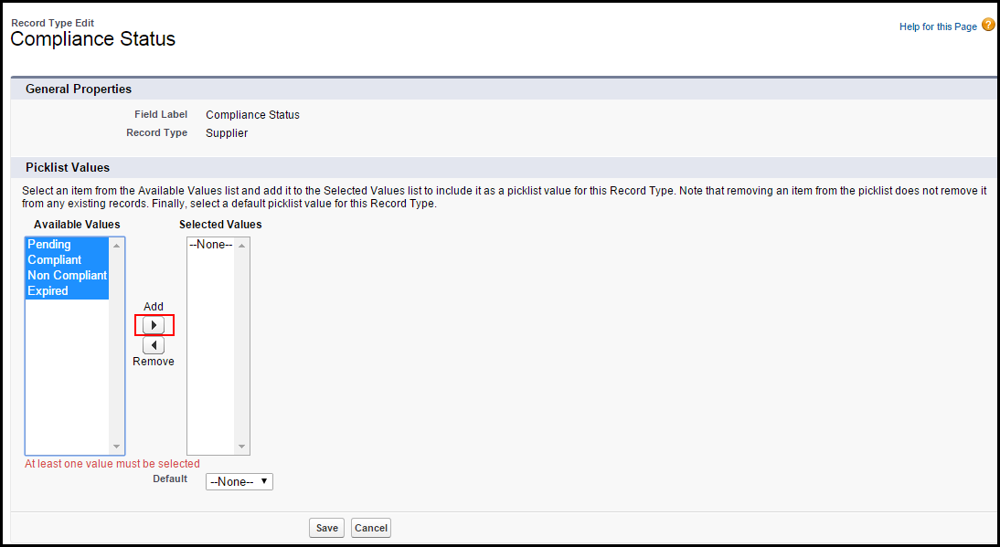

Other Post-Installation Configurations
- Configure Remote Site SettingsRemote Site Settings enable you to interact with the external sites using XmlHttpRequest in an s-control or custom button from any Visualforce page, Apex callout, or JavaScript code. This must be configured for Captcha program to be used for Supplier Onboarding.
- Configure Wizard System PropertiesWizard System Properties enables you to manage the custom data of your org pertaining to Wizard. This must be configured for your instance URL.
- Create tabs You must create the Surveys and Prospective Supplier tab to access the respective objects.
- Wizard Component Library Wizard Component Library is a repository consisting of Input Controls and Steps. These input controls and steps are reusable.
- Creating SurveysA Survey is a methodology of collecting information from the suppliers using forms. In STP, the buyers assign the surveys to suppliers. Suppliers then respond to those surveys. The approvers then evaluate suppliers based on responses to the surveys. The buyers or admins can create the surveys that are to be assigned to suppliers.
-
SRM Setup ConsoleYou can manage basic SRM configurations from SRM Setup Console. For this release, you must configure the following settings in your org.
- Compliance Type
- Survey Set
- Supplier Group
- Onboarding Type
- Add Countries and States in Custom SettingsYou must add the Countries and States in the custom settings. The countries and states that you add are then visible as picklists in Prospective Suppliers screens.
-
Configure the existing Suppliers Profile (Test Partner Community User)You must configure the profile that you have assigned to the suppliers. You must perform the following configurations.
- Add tabs to the community
You must add the Survey tab to the community you want to give public access to.
- Enable VisualForce page to the community
You must enable the visualforce pages to the community for visibility to your users.
- Enable Apex Classes
You must configure public access settings to enable apex classes.
- Provide SObject Access
You must provide the SObject Access to the objects for visibility to your users.
- Provide Field-Level Security
You must provide the SObject Access to the objects for visibility to your users.
- Assign LicensesYou must assign appropriate licenses to the users.
- Add tabs to the community
-
Configure the existing Guest User Supplier Profile (Suppliers Profile)You must configure the profile that you have assigned to the guest suppliers to access public community. You must perform the following configurations.
- Add tabs to the community
You must add the Survey tab to the community you want to give public access to.
- Enable VisualForce page to the community
You must enable the visualforce pages to the community for visibility to your users.
- Enable Apex Classes
You must configure public access settings to enable apex classes.
- Provide SObject Access
You must provide the SObject Access to the objects for visibility to your users.
- Provide Field-Level Security
You must provide the SObject Access to the objects for visibility to your users.
- Assign LicensesYou must assign appropriate licenses to the users.
- Add tabs to the community
- Edit Page Layout of Account recordsYou must edit the page layout of account records to display the Compliance Status field and Surveys related list.
- Enable Compliance Status picklist values for record typesYou must enable the picklist values for Compliance Status field.
To configure remote site settings
To configure wizard system properties
To create the surveys tab
To add a country in custom settings
To add a state in custom settings
-
Click Save.

To configure customer community supplier profile
You must perform the following steps in order to configure customer community supplier profile.
To add a tab to the community
- Go to Setup > Administer > Manage Users > Profiles and select the profile that you have assigned to Supplier Portal Users. We have used Test Partner Community User.
- Click Edit.
- Under the Custom Tab Settings section, select Default On for Surveys.
- Click Save.
To enable a visualforce page
-
From Available Visualforce Pages section, select the following Visualforce pages and click
 .
.
- Apttus_SRM.PublicRFIBidResponse
- Apttus_SRM.SupplierSurveyView
- Apttus_SRM.SupplierOnboardingRequest
- Apttus_Wizard.Wizard
- SiteLogin
- SiteRegister
- SiteRegisterConfirm
- UnderConstruction
To enable an apex class
-
Select the following apex classes from Available Apex Classes and click .
- Apttus_SRM.SurveyResponseHandler
To provide sobject access
To provide field-level security
To configure guest user supplier profile
You must perform the following steps in order to configure guest user supplier profile.
To add a tab to the community
-
Select Surveys from the Available Tabs section and click .
To enable a visualforce page
-
From Available Visualforce Pages section, select the following Visualforce pages and click .
- Apttus_SRM.PublicRFIBidResponse
- Apttus_SRM.SupplierSurveyView
- Apttus_SRM.SupplierOnboardingRequest
- Apttus_Wizard
To enable an apex class
-
Select the following apex classes from Available Apex Classes and click .
- Apttus_SRM.SurveyResponseHandler
To provide sobject access
To provide field-level security
To assign license
Note
Perform this step in your Production org only.
- Go to Setup > App Setup > Customize > Communities and select All Communities.
- Click Manage for the community you want to give public access to.
- Click Community Management picklist and select Go to Force.com.
- Click Public Access Settings. Clicking this button will redirect you to the guest profile you are using for your suppliers.
- Click View Users.
- Click on the Full Name of your guest user. For example, click Site Guest User Suppliers. You are redirected to User Detail page.
- Under Managed Packages related list, click Assign Licenses.
- Ensure that you select check boxes for Apttus Supplier Relationship Management, Apttus Contract Management, and Apttus Scorecard Management.
- Click Save.
To edit page layout of account records
To enable picklist values for compliance status field
-
From the Available Values table, select all values and click
 .
.
